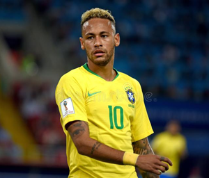

Neymar Jr
Neymar da Silva Santos Júnior, known as Neymar, is a Brazilian professional footballer who plays as a forward for Ligue 1 club Paris Saint-Germain and the Brazil national team. He is widely regarded as one of the best players in the world.